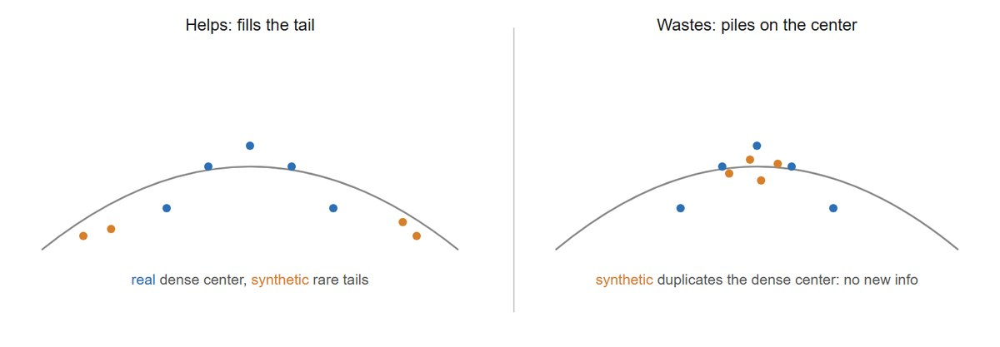
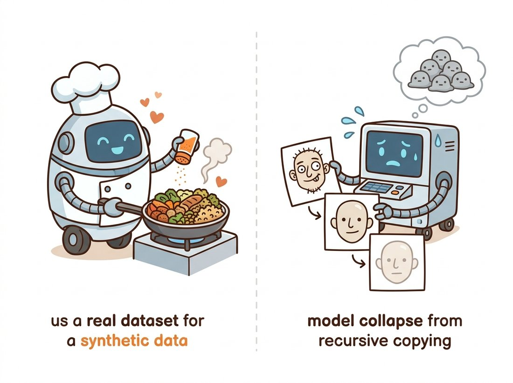

"I offered to generate a million training images. The classifier thanked me, learned my habits instead of the world's, and proceeded to misclassify reality with great confidence. We are still working on the recipe."
A Synthetic Dataset With Good Intentions
A generator that produces realistic, controllable images on demand is a data engine: it can manufacture training examples for the detectors, classifiers, and segmenters of Part III, but only when the synthetic data adds information the real data lacks rather than echoing what it already has. Synthetic data is a genuine win for rare classes, privacy-sensitive domains, and hard-to-collect edge cases, because the generator can produce the exact distribution shift you need. It is a trap when it merely resamples the real distribution (adding no information), when its own biases leak into the downstream model, or when models are trained recursively on generated output and collapse toward a narrower distribution each generation. The skill is knowing which regime you are in, generating with labels preserved, and blending synthetic with real so the downstream model gains.
With measurement in hand from Section 37.1 and Section 37.2, we can stop studying generators and start using them. This section is the payoff of an arc that runs the length of the book. Data augmentation began as the geometric transforms (rotations, flips, crops) of Chapter 5, matured into the learned augmentation policies and transfer-learning recipes of Chapter 21, and now reaches its most powerful form: a generative model that does not perturb existing images but synthesizes entirely new ones. The promise is to break the data bottleneck that limits so many vision projects. The peril is subtle, because synthetic data that looks great can still teach a downstream model the wrong thing. We will be precise about both.
1. When Synthetic Data Actually Helps Beginner
The governing principle is information, not realism. Synthetic data helps the downstream model exactly when it supplies information the real training set does not already contain. Three situations reliably meet that bar:
- Rare classes and long tails. A defect detector may have ten thousand normal boards and twelve examples of a critical fault. A generator conditioned on "this rare fault" can manufacture hundreds of varied instances, filling a gap real collection cannot close in time.
- Privacy-sensitive domains. Medical imaging and faces carry consent and regulatory constraints. A generator trained under those constraints can emit shareable synthetic samples that preserve the statistical structure needed for training without exposing any real patient or person.
- Controllable edge cases. With the conditioning of Chapter 35, you can dial up the exact rare combination you need: a pedestrian at night in rain seen from a low angle. Collecting that in the wild is slow; generating it is a prompt.
In all three the synthetic data extends the distribution into regions the real data underpopulates. That is the win condition, and Figure 37.3.1 contrasts it with the failure condition.

The intuitive test "do these synthetic images look real to me?" is the wrong criterion, and trusting it is how teams generate a million convincing samples that do not help. A downstream classifier or detector does not learn from how realistic an image looks to a human; it learns from the information the sample adds relative to the real training set. A flawless, photorealistic image that merely duplicates the dense center of the real distribution (Figure 37.3.1, right) teaches the model nothing it did not already know, while importing the generator's biases for free. Conversely, a slightly imperfect synthetic pedestrian-at-night image that fills a genuine gap in a daytime-heavy set can be worth far more than a thousand pristine daytime ones. Judge synthetic data by the coverage it adds and by held-out accuracy on real data, never by how good it looks to your eye.
2. When Synthetic Data Hurts Intermediate
The failure modes are less obvious than the wins, which is why teams get burned. First, distribution shift: the generator's samples are subtly off (a texture statistic, a lighting prior, an over-smoothing the eye forgives but a downstream network keys on), so a model trained heavily on them learns features that do not transfer to real test images. The detector reports excellent accuracy on a synthetic validation set and falls over in the field. Second, bias amplification: any skew in the generator (it draws "doctor" as one demographic, "nurse" as another) is injected into the downstream model at scale and with a veneer of statistical legitimacy. Third, and most insidious, model collapse.
If a generator is trained on data that includes the output of previous generators (increasingly unavoidable as the web fills with generated images), each generation learns a slightly narrower distribution than the last. Rare modes vanish first, variance shrinks, and after several rounds the model produces a degenerate, low-diversity caricature of the original data. Shumailov et al. (2024, Nature) named this model collapse and proved it occurs even with unlimited synthetic data, because finite sampling systematically drops the tails. The practical rule that follows: never train a generator's successor purely on its own output, and always anchor synthetic-augmented training with a substantial fraction of real data. Synthetic data is a supplement, not a substitute.
Model collapse is what happens when a generator drinks its own bathwater. Each generation photocopies the last, the photocopier flattens the faint detail in the corners first, and after a few rounds everyone in the dataset has the same blandly symmetric face and no one remembers the weird ones. The tails go first because rare things are, by definition, the easiest to never sample. Mnemonic for the whole section: synthetic data is salt, not bread; it seasons a real meal and ruins one made entirely of itself.

3. Generating With Labels Preserved Intermediate
For synthetic data to train a supervised model it must come with correct labels, and getting the label right is half the engineering. For a classifier you condition the generator on the target class, so the label is the prompt: generate "a photo of a Bengal tiger" and label it tiger. For detection and segmentation the problem is harder, because you need pixel-accurate boxes or masks to match the synthetic image. Two strategies dominate. The conditioning route uses the controllable generation of Chapter 35: generate the image from a layout or segmentation map, so the conditioning map is the label by construction. The annotation route generates images freely and then runs a strong pretrained labeler (a SAM segmenter from Chapter 24, or a detector) to produce pseudo-labels, that is, labels machine-generated by another model rather than drawn by a human, accepted as good enough to train on. The code below shows the class-conditional classifier case with a diffusers pipeline.
import torch
from diffusers import StableDiffusionPipeline
pipe = StableDiffusionPipeline.from_pretrained(
"stable-diffusion-v1-5/stable-diffusion-v1-5", torch_dtype=torch.float16
).to("cuda")
pipe.set_progress_bar_config(disable=True)
def synthesize_class(class_name, n=64, seed=0):
"""Generate n labeled samples for one class. Label == class_name."""
g = torch.Generator("cuda").manual_seed(seed)
images = []
# Vary the prompt template so samples are not near-duplicates (helps recall).
templates = [
"a photo of a {}", "a {} in natural lighting",
"a close-up photo of a {}", "a {} outdoors, high detail",
]
for i in range(n):
prompt = templates[i % len(templates)].format(class_name)
img = pipe(prompt, num_inference_steps=30, guidance_scale=6.5,
generator=g).images[0]
images.append((img, class_name)) # (image, label) pair
return images
tiger_data = synthesize_class("Bengal tiger", n=64)
# tiger_data is a list of (PIL.Image, "Bengal tiger") training pairs.
When you need detection or segmentation labels, generating from a conditioning map gives you the annotation for free. A ControlNet pipeline (from Chapter 35) takes a segmentation map as input, so the map you fed in is the exact mask of the image that comes out, no separate annotation step:
from diffusers import StableDiffusionControlNetPipeline, ControlNetModel
import torch
cn = ControlNetModel.from_pretrained(
"lllyasviel/sd-controlnet-seg", torch_dtype=torch.float16)
pipe = StableDiffusionControlNetPipeline.from_pretrained(
"stable-diffusion-v1-5/stable-diffusion-v1-5", controlnet=cn,
torch_dtype=torch.float16).to("cuda")
# seg_map: a colored ADE20K-style segmentation image you control.
image = pipe("a street scene, photorealistic",
image=seg_map, num_inference_steps=30).images[0]
# (image, seg_map) is now a perfectly aligned (sample, mask) training pair.
This replaces a human annotation pass (minutes per image, the dominant cost of segmentation datasets) with a single generation call, because the label is the input, not an afterthought.
4. Blending Synthetic With Real Advanced
The empirical consensus is that synthetic data works best as a supplement that fills gaps, mixed with real data, not as a replacement. A useful way to reason about the mix is the expected downstream loss as a function of the synthetic fraction $\alpha$. Let $\mathcal{L}_{\text{real}}$ be the loss contribution per real sample and $\mathcal{L}_{\text{syn}}$ per synthetic sample, with synthetic samples carrying both a coverage benefit (they reach the tails) and a bias cost (they import generator artifacts). The downstream model improves with synthetic data only while the marginal coverage benefit of the next synthetic sample exceeds its marginal bias cost; past that point, more synthetic data degrades performance, which is the empirical inverted-U everyone observes:
where $\mathcal{L}_{\text{syn}}(\alpha)$ rises with $\alpha$ as the synthetic distribution's biases dominate. In practice you find $\alpha^\star$ empirically by sweeping the mixing ratio and measuring downstream accuracy on a held-out real validation set, never on synthetic validation, because synthetic validation hides exactly the distribution shift you are worried about. The training loop below shows the mechanics: concatenate real and synthetic datasets at a fixed ratio and train as usual. You will build this full sweep, from generating the synthetic set to plotting the inverted-U, in the Hands-On Lab at the end of this section, which turns a generator into a working data engine and ties the chapter's measurement and deployment threads together.
from torch.utils.data import ConcatDataset, DataLoader, Subset
import random
def make_mixed_loader(real_ds, syn_ds, alpha, batch_size=64):
"""Mix real and synthetic so synthetic is fraction alpha of the total.
alpha = 0.0 -> all real; alpha = 0.5 -> equal parts.
Crucially, validation stays 100% real (built separately).
"""
n_real = len(real_ds)
n_syn = int(alpha / (1 - alpha) * n_real) if alpha < 1 else len(syn_ds)
n_syn = min(n_syn, len(syn_ds))
syn_idx = random.sample(range(len(syn_ds)), n_syn)
mixed = ConcatDataset([real_ds, Subset(syn_ds, syn_idx)])
return DataLoader(mixed, batch_size=batch_size, shuffle=True)
# Sweep alpha and pick the value that maximizes REAL-validation accuracy.
for alpha in [0.0, 0.25, 0.5, 0.75]:
loader = make_mixed_loader(real_train, synthetic_train, alpha)
# ... train classifier on `loader`, evaluate on real_val ...
# Typical result: accuracy rises then falls -> an interior optimum.
Who: a manufacturing-vision team at an automotive parts supplier, 2024, building a surface-defect classifier. Situation: they had abundant images of good parts and a few dozen examples each of three rare but safety-critical defects, far too few to train a reliable classifier; the model's recall on the rare defects sat near chance. Problem: collecting more real defects meant waiting months for the line to produce them naturally, and deliberately inducing defects was costly and unsafe. Decision: they fine-tuned a diffusion model on the few real defect crops, generated several hundred varied synthetic examples per rare class with the prompt-template diversity of subsection 3, then swept the mixing ratio against a strictly real validation set. Result: at a synthetic fraction near 0.4 the rare-defect recall jumped substantially while overall accuracy held, and pushing synthetic past 0.6 started degrading real-world performance exactly as the inverted-U predicts. They shipped the 0.4 mix. Lesson: synthetic data closed a data gap real collection could not, but only at the right ratio found on real validation; both the win and the ceiling matched the theory of subsection 4.
The 2023 to 2026 literature has moved from "can synthetic data help" to "how far does it scale and where does it break." On the optimistic side, Azizi et al. (2023, arXiv:2304.08466) showed that augmenting ImageNet with class-conditional diffusion samples improves classification accuracy and set new synthetic-augmentation records, and Tian et al.'s StableRep (2023, arXiv:2306.00984) found that representations learned purely from Stable-Diffusion images can rival those learned from real images for some tasks. On the cautionary side, the model-collapse line (Shumailov et al., 2024; Alemohammad et al.'s "Self-Consuming Generative Models Go MAD," 2023, arXiv:2307.01850) quantifies how recursive training degrades quality and diversity, and Gerstgrasser et al. (2024) show that accumulating real data alongside synthetic, rather than replacing it, avoids collapse. The synthesis emerging across these papers is the one this section teaches: synthetic data is a powerful gap-filler anchored to real data, dangerous as a wholesale replacement, and the active frontier is automatic mixing strategies and quality filters (often the very reward models of Section 37.2) that keep only the synthetic samples that add information.
For each scenario, state whether synthetic data is likely to help, hurt, or do nothing, and justify it in one sentence using the information principle of subsection 1: (a) augmenting a well-balanced 10-class dataset that already has 50,000 examples per class; (b) adding generated night-time pedestrian images to a daytime-heavy autonomous-driving set; (c) training the next version of a face generator on a mix that is 90 percent images scraped from a web that is now full of generated faces.
Take a small real classification dataset (for example a 4-class subset of CIFAR-10 limited to 200 real images per class). Generate synthetic samples for each class with a diffusers pipeline, then use make_mixed_loader from subsection 4 to train a small CNN at synthetic fractions of 0.0, 0.25, 0.5, 0.75, evaluating each on a held-out real validation split. Plot accuracy against the synthetic fraction, identify the interior optimum, and confirm the inverted-U shape predicted by the section.
Build a minimal recursive-training loop on a one-dimensional toy distribution (a mixture of three Gaussians). Fit a simple generative model (a Gaussian mixture estimate), sample from it, fit the next model only on those samples, and repeat for five generations. Track the number of recovered modes and the total variance at each generation. Show that the smallest mode disappears first and variance shrinks, then repeat the experiment accumulating the original real samples alongside the synthetic ones each round and show that collapse no longer occurs. Connect your result to the practical rule in the model-collapse key-insight box.
Hands-On Lab: Build a Synthetic-Data Engine and Find Its Mixing Optimum
Objective
Turn a diffusion generator into a working data engine for a small image classifier, then prove, on a strictly real validation set, that adding synthetic data follows the inverted-U the chapter predicts. You finish with a single plot of real-validation accuracy against the synthetic mixing fraction, the empirically located optimum $\alpha^\star$, and a one-paragraph report on whether the synthetic data helped, which is exactly the evidence an applied team needs before it trusts a synthetic-augmentation pipeline.
What You'll Practice
- Generating class-conditional, label-preserving synthetic images with a
diffuserspipeline (Code Fragment 1) - Mixing real and synthetic data at a controlled fraction while keeping validation strictly real (Code Fragment 3)
- Sweeping the mixing ratio $\alpha$ and reading the inverted-U of subsection 4 off a real-validation curve
- Sanity-checking the synthetic set with the CLIPScore prompt-alignment metric of Section 37.1
- Distinguishing the win condition (coverage) from the trap (resampling the dense center) of subsection 1
Setup
A machine with Python 3.9 or newer and, ideally, a GPU (a free Colab GPU runtime generates the synthetic set comfortably; on CPU, drop the per-class count to keep generation under an hour). Install the generation, training, and metric libraries:
pip install diffusers transformers accelerate torch torchvision torchmetrics matplotlibFor real data, use a small balanced slice of an existing labeled set, for example four CIFAR-10 classes (cat, dog, automobile, airplane) capped at roughly 200 real training images per class with a held-out real validation split. Keeping the real set small on purpose is what creates room for synthetic data to add information.
Steps
Step 1: Build the small real dataset with a strictly real validation split
Load four classes, cap the per-class count to manufacture a genuine data shortage, and carve off a real validation split now so no synthetic image can ever leak into evaluation. This split is the only honest judge of everything that follows.
import torchvision, torch
from torch.utils.data import Subset
from collections import defaultdict
classes = {0: "airplane", 1: "automobile", 3: "cat", 5: "dog"} # CIFAR-10 indices
full = torchvision.datasets.CIFAR10(root="data", train=True, download=True)
# TODO: build real_train as a Subset with at most 200 images per class in `classes`,
# and real_val as a SEPARATE Subset of held-out images (say 100 per class) that
# NEVER overlaps real_train. Keep only the four classes above.
# Hint: walk full.targets, bucket indices per class, slice [:200] for train
# and [200:300] for val, then remap the four labels to 0..3.
real_train, real_val = ..., ...
Hint
Remap the original CIFAR indices (0, 1, 3, 5) to contiguous labels (0, 1, 2, 3) so the classifier head has four outputs. The validation slice must be disjoint from train; an overlapping index here invalidates every accuracy number in the lab.
Step 2: Generate a class-conditional synthetic set
Stand up a Stable Diffusion pipeline and generate labeled samples per class, rotating prompt templates so the synthetic set covers each class instead of collapsing to one canonical view, the diversity trick of Code Fragment 1.
import torch
from diffusers import StableDiffusionPipeline
pipe = StableDiffusionPipeline.from_pretrained(
"stable-diffusion-v1-5/stable-diffusion-v1-5", torch_dtype=torch.float16
).to("cuda")
pipe.set_progress_bar_config(disable=True)
templates = ["a photo of a {}", "a {} in natural lighting",
"a close-up photo of a {}", "a {} outdoors, high detail"]
def synthesize_class(name, n=200, seed=0):
g = torch.Generator("cuda").manual_seed(seed)
out = []
# TODO: loop n times, format a rotating template with `name`, call the pipe at
# num_inference_steps=30, resize the result to 32x32 (to match CIFAR), and
# append an (image, label) pair. Return the list.
...
return out
Hint
Resize each generated image to 32x32 so it is the same resolution as the real CIFAR images; a resolution mismatch is itself a distribution shift the classifier would key on. Save the synthetic images to disk so you generate once and reuse across every value of $\alpha$.
Step 3: Sanity-check the synthetic set with CLIPScore
Before training on the synthetic images, confirm they actually depict their labels using the prompt-alignment metric of Section 37.1. A low CLIPScore for a class means the generator drifted off-prompt, and training on those samples would teach the classifier the wrong thing.
from torchmetrics.multimodal.clip_score import CLIPScore
clip = CLIPScore(model_name_or_path="openai/clip-vit-base-patch16")
# TODO: for each class, compute the mean CLIPScore between its synthetic images
# and the prompt "a photo of a {name}". Print one score per class and flag any
# class whose alignment is much lower than the others as suspect.
...
Hint
CLIPScore expects images as uint8 tensors of shape (C, H, W) and the matching text string. Higher is better; a class that scores far below its peers is the first place to look if its synthetic samples later fail to help.
Step 4: Sweep the mixing fraction and train a small CNN at each
Use the mixing helper from Code Fragment 3 to blend real and synthetic at several values of $\alpha$, train a small classifier at each, and record accuracy on the real validation set only. This is the experiment that locates $\alpha^\star$.
from torch.utils.data import ConcatDataset, DataLoader, Subset
import random
def make_mixed_loader(real_ds, syn_ds, alpha, batch_size=64):
n_real = len(real_ds)
n_syn = int(alpha / (1 - alpha) * n_real) if alpha < 1 else len(syn_ds)
n_syn = min(n_syn, len(syn_ds))
idx = random.sample(range(len(syn_ds)), n_syn)
return DataLoader(ConcatDataset([real_ds, Subset(syn_ds, idx)]),
batch_size=batch_size, shuffle=True)
accs = {}
for alpha in [0.0, 0.25, 0.5, 0.75]:
loader = make_mixed_loader(real_train, syn_ds, alpha)
# TODO: train a small CNN (a few conv layers, or a torchvision resnet18 with a
# 4-way head) for a fixed number of epochs on `loader`, then evaluate top-1
# accuracy on real_val ONLY and store it in accs[alpha].
accs[alpha] = ...
Hint
Hold everything except $\alpha$ fixed: same architecture, epochs, optimizer, and seed, so the only moving part is the synthetic fraction. Always evaluate on real_val; touching a synthetic validation set hides the very distribution shift the sweep exists to expose.
Step 5: Plot the inverted-U and locate the optimum
Plot real-validation accuracy against $\alpha$ and read off the optimum. A well-behaved run rises from the all-real baseline, peaks at an interior $\alpha^\star$, then falls as generator bias dominates, the exact shape subsection 4 predicts.
import matplotlib.pyplot as plt
xs = sorted(accs)
ys = [accs[a] for a in xs]
# TODO: plot ys vs xs, mark the argmax as alpha_star, and print whether the peak
# beats the alpha=0.0 (all-real) baseline. Write one sentence: did synthetic help?
...
Hint
If accuracy only ever falls (no interior peak), your real set is probably already large enough that synthetic data adds no information (the trap of Figure 37.3.1, right). Shrink the real per-class cap and rerun; the win condition needs a genuine data shortage.
Expected Output
Step 2 leaves you with a folder of a few hundred labeled synthetic images per class. Step 3 prints one CLIPScore per class (well-aligned classes typically land in a similar range; a clear outlier flags a class to inspect). Step 4 fills accs with one real-validation accuracy per $\alpha$, and Step 5 produces the headline artifact: an accuracy-versus-$\alpha$ curve that rises from the all-real baseline at $\alpha = 0$, peaks at an interior $\alpha^\star$ (often somewhere between 0.25 and 0.5 for a genuinely small real set), and declines afterward. The deliverable is that plot, the located $\alpha^\star$, and a one-paragraph note stating whether the peak beat the all-real baseline and by how much, the honest verdict on whether your generator earned its place as a data engine.
Stretch Goals
- Add a FID measurement (Section 37.1, via
torchmetricsorclean-fid) between your synthetic set and the real training set, and see whether a lower FID class predicts a larger accuracy gain, testing whether distribution distance forecasts downstream usefulness. - Reproduce model collapse in miniature: retrain the diffusion samples' source on a set that is mostly its own previous synthetic output for two rounds, regenerate, and watch $\alpha^\star$ and the peak accuracy shrink, the recursive trap of the model-collapse key-insight made concrete.
- Swap class-conditional generation for the ControlNet layout-to-image route of Chapter 35 (Code Fragment 2) to build a tiny segmentation set with free masks, and run the same mixing sweep for a segmentation model.
Complete Solution
# Synthetic-data engine: small real set, class-conditional generation,
# CLIPScore sanity check, mixing sweep, inverted-U plot. Eval is ALWAYS real.
import os, random
from collections import defaultdict
import torch, torchvision
import torch.nn as nn
from torch.utils.data import Subset, ConcatDataset, DataLoader, Dataset
from torchvision import transforms
from diffusers import StableDiffusionPipeline
from torchmetrics.multimodal.clip_score import CLIPScore
import matplotlib.pyplot as plt
device = "cuda" if torch.cuda.is_available() else "cpu"
to_tensor = transforms.ToTensor()
classes = {0: "airplane", 1: "automobile", 3: "cat", 5: "dog"}
remap = {orig: new for new, orig in enumerate(classes)} # 0,1,3,5 -> 0,1,2,3
# --- Step 1: small real train + disjoint real validation ---
full = torchvision.datasets.CIFAR10("data", train=True, download=True,
transform=to_tensor)
buckets = defaultdict(list)
for i, y in enumerate(full.targets):
if y in classes:
buckets[y].append(i)
train_idx, val_idx = [], []
for y, idxs in buckets.items():
train_idx += idxs[:200] # genuine shortage: only 200 real / class
val_idx += idxs[200:300] # held-out, disjoint, strictly real
class Remapped(Dataset):
def __init__(self, base, idx): self.base, self.idx = base, idx
def __len__(self): return len(self.idx)
def __getitem__(self, k):
x, y = self.base[self.idx[k]]
return x, remap[y]
real_train = Remapped(full, train_idx)
real_val = Remapped(full, val_idx)
# --- Step 2: class-conditional synthetic generation (label == prompt class) ---
pipe = StableDiffusionPipeline.from_pretrained(
"stable-diffusion-v1-5/stable-diffusion-v1-5",
torch_dtype=torch.float16 if device == "cuda" else torch.float32).to(device)
pipe.set_progress_bar_config(disable=True)
templates = ["a photo of a {}", "a {} in natural lighting",
"a close-up photo of a {}", "a {} outdoors, high detail"]
resize32 = transforms.Resize((32, 32))
class SynSet(Dataset):
def __init__(self): self.items = [] # (tensor_img, label)
def add(self, img, label): self.items.append((resize32(to_tensor(img)), label))
def __len__(self): return len(self.items)
def __getitem__(self, k): return self.items[k]
syn = SynSet()
syn_by_class = defaultdict(list)
N_PER = 200
for orig, name in classes.items():
g = torch.Generator(device).manual_seed(orig)
for i in range(N_PER):
prompt = templates[i % len(templates)].format(name)
img = pipe(prompt, num_inference_steps=30, guidance_scale=6.5,
generator=g).images[0]
syn.add(img, remap[orig])
syn_by_class[name].append(resize32(to_tensor(img)))
# --- Step 3: CLIPScore sanity check per class ---
clip = CLIPScore(model_name_or_path="openai/clip-vit-base-patch16")
for name, imgs in syn_by_class.items():
batch = (torch.stack(imgs) * 255).to(torch.uint8)
score = clip(batch, [f"a photo of a {name}"] * len(imgs))
print(f"CLIPScore[{name:10s}] = {score.item():.2f}")
# --- Step 4: mixing sweep, evaluate on real_val only ---
def make_mixed_loader(real_ds, syn_ds, alpha, bs=64):
n_real = len(real_ds)
n_syn = int(alpha / (1 - alpha) * n_real) if alpha < 1 else len(syn_ds)
n_syn = min(n_syn, len(syn_ds))
idx = random.sample(range(len(syn_ds)), n_syn)
return DataLoader(ConcatDataset([real_ds, Subset(syn_ds, idx)]),
batch_size=bs, shuffle=True)
def small_cnn():
return nn.Sequential(
nn.Conv2d(3, 32, 3, padding=1), nn.ReLU(), nn.MaxPool2d(2),
nn.Conv2d(32, 64, 3, padding=1), nn.ReLU(), nn.MaxPool2d(2),
nn.Flatten(), nn.Linear(64 * 8 * 8, 128), nn.ReLU(), nn.Linear(128, 4))
def train_eval(loader, epochs=10, seed=0):
torch.manual_seed(seed)
net = small_cnn().to(device)
opt = torch.optim.Adam(net.parameters(), lr=1e-3)
lossf = nn.CrossEntropyLoss()
for _ in range(epochs):
net.train()
for x, y in loader:
x, y = x.to(device), y.to(device)
opt.zero_grad(); lossf(net(x), y).backward(); opt.step()
net.eval(); correct = total = 0
vl = DataLoader(real_val, batch_size=128)
with torch.no_grad():
for x, y in vl:
x, y = x.to(device), y.to(device)
correct += (net(x).argmax(1) == y).sum().item(); total += y.numel()
return correct / total
accs = {}
for alpha in [0.0, 0.25, 0.5, 0.75]:
accs[alpha] = train_eval(make_mixed_loader(real_train, syn, alpha))
print(f"alpha={alpha:.2f} real-val acc={accs[alpha]:.3f}")
# --- Step 5: plot the inverted-U and locate alpha* ---
xs = sorted(accs); ys = [accs[a] for a in xs]
alpha_star = max(accs, key=accs.get)
plt.plot(xs, ys, "o-"); plt.axvline(alpha_star, ls="--", c="orange")
plt.xlabel("synthetic fraction alpha"); plt.ylabel("real-validation accuracy")
plt.title(f"alpha* = {alpha_star} (baseline alpha=0: {accs[0.0]:.3f})")
plt.savefig("mixing_sweep.png", dpi=120, bbox_inches="tight")
helped = accs[alpha_star] > accs[0.0]
print(f"alpha* = {alpha_star}; synthetic data "
f"{'helped' if helped else 'did not help'} "
f"(+{accs[alpha_star] - accs[0.0]:.3f} over all-real).")